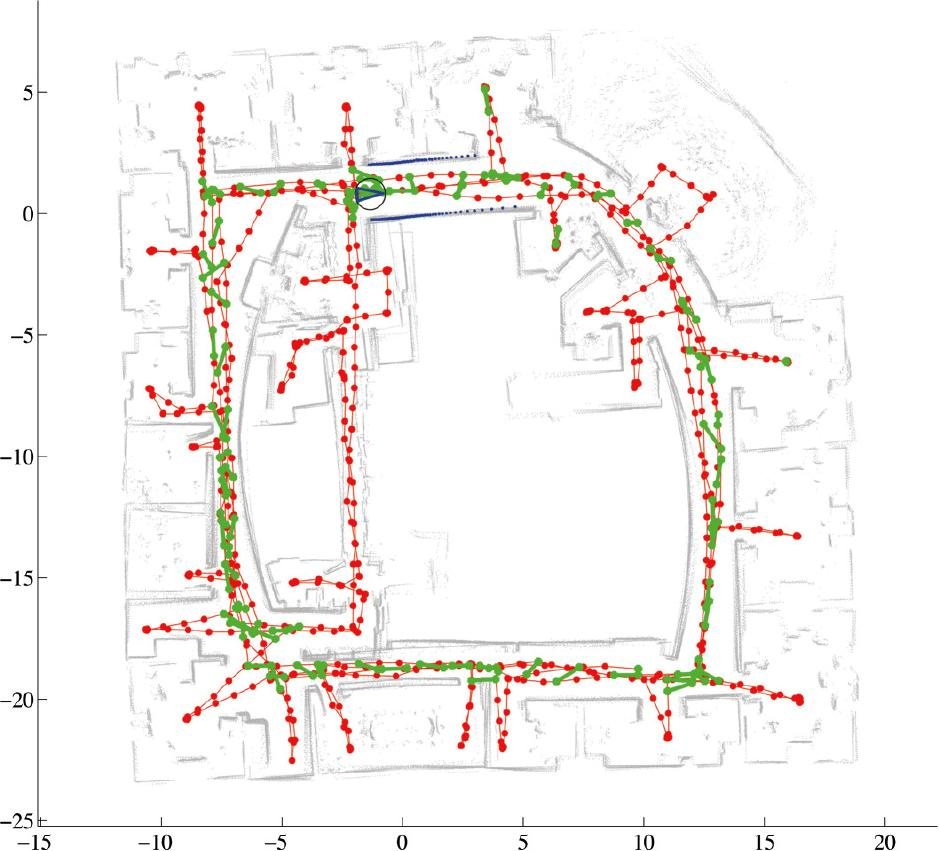
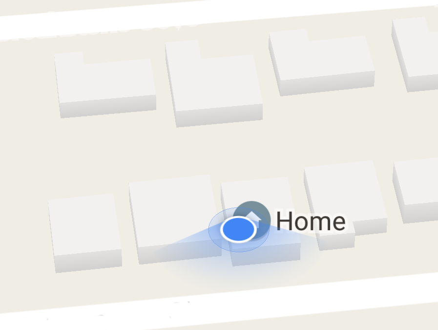

The most widespread applications of augmented reality today are built on top of smartphones;
these devices combine a number of useful sensors into a convenient handheld package: accelerometers,
gyroscopes, high-quality cameras, GPS units, and more are all commonly included in almost every
smartphone on the market. Furthermore, smartphones are also equipped with Internet connectivity and a number of user interaction
mechanisms, such as touchscreens, microphones, and speakers.
Almost all augmented reality applications rely on fast and powerful image processing.
This processing, known as computer vision (CV for short) allows applications to
correlate what is seen through the camera to real world geometry.
The algorithms and techniques of computer vision are not only used in augmented reality, however:
computer vision is also used in fields like automated quality control, robot navigation, and web search--
in short, any process that requires visual input or inspection can use computer vision.
Most augmented reality applications also require accurate methods of tracking user movement.
For personal-scale tracking, solid-state accelerometers and gyroscopes-- so-called microelectromechanical systems
(MEMS) devices-- are usually used to track user movement with 6 degrees of freedom.
On a larger scale, GPS tracking is usually used in conjuction with geotagging to add location-specific elements to the experience.